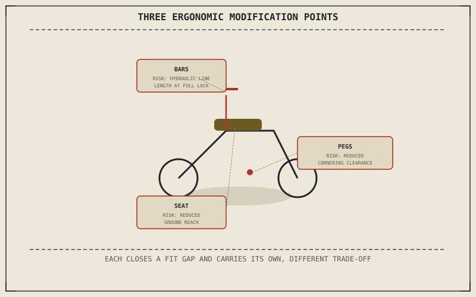

Chapter 13.1 named comfort as one of three genuine motives behind a modification, and three specific contact points — handlebars, footpegs, and seat — are where that motive actually gets addressed on the machine itself. Each closes a specific mismatch between the stock motorcycle's assumed rider and the one actually sitting on it, and each carries its own, honestly different trade-off.
Chapter 13.3 closed by turning from matching suspension to a rider's weight toward matching physical fit instead. This chapter covers that fit directly.
Handlebars: Reach and Rise
A stock handlebar's reach and rise assume a specific torso length and shoulder width, and a rider outside that assumed range can end up reaching too far forward or holding an uncomfortably bent wrist for the length of a ride. Risers or a differently bent bar close that gap directly, but Chapter 7.4 already established that brake and clutch lines are routed with a specific bar position in mind — a significant change in reach or rise can pull those lines taut at full lock, which is why a meaningful bar swap sometimes needs longer hydraulic lines or cables to match, not just the bar itself.
Footpegs: The Other Two Points of the Triangle
Rearset or lowering peg kits change knee bend and the angle of the leg beneath the rider, addressing the same kind of fit mismatch bars address for the arms and shoulders. Chapter 4.7 already established that a motorcycle's maximum lean angle is set by whatever component hangs lowest and furthest from centreline, and a footpeg is frequently exactly that component — lowering or repositioning pegs for comfort can measurably reduce the lean angle available before the peg itself, rather than the tyre, becomes the limit.
Bars, pegs, and seat each close a real fit mismatch, and each carries a specific, honestly different cost — hydraulic line length, cornering clearance, reach to the ground — rather than being a free comfort gain with no trade-off at all.

A diagram showing three ergonomic modification points — handlebars, footpegs, and seat — each closing a specific fit gap and each carrying its own trade-off: hydraulic line length, cornering clearance, and reach to the ground.
Seat: The Contact Point Most Riders Ignore
A seat's foam density and shape directly affect pressure distribution over a long ride, and an aftermarket seat can genuinely reduce the fatigue and numbness a poorly shaped stock seat produces. Chapter 5.5 already flagged seat height as a practical ergonomic trade-off tied directly to suspension travel; a taller aftermarket seat, chosen purely for comfort, can work directly against a shorter rider's reach to the ground at a stop — the same trade-off Chapter 5.5 named, now reached through a seat swap rather than a suspension choice.
A Common Misconception, Cleared Up Early
It's a common assumption that ergonomic modifications are simple, low-risk comfort upgrades with no real downside worth naming. Each of the three components this chapter covered carries a specific cost most riders don't anticipate before buying: bars can strain hydraulic lines at full lock, pegs can reduce the lean angle Chapter 4.7 described, and a taller seat can undermine the ground reach a shorter rider actually needs. Naming that specific trade-off honestly, the same way Chapter 13.1 asked riders to name their actual motive honestly, prevents a comfort fix from quietly introducing a different problem.
Where This Leads
Chapter 13.5 turns to engine modifications next, where the costs at stake move from fit and clearance to reliability and the engine's actual service life.
Key Concepts to Remember
- A significant handlebar reach or rise change can strain hydraulic lines routed for the stock bar position at full lock.
- Lowered or repositioned footpegs can reduce the lean angle available before the peg itself becomes the limiting component.
- A taller aftermarket seat can undermine a shorter rider's reach to the ground, the same trade-off Chapter 5.5 already named for suspension travel.
Cross-References
| ← Ch. 7.4 | Established hydraulic line routing tied to bar position; this chapter treats a significant bar swap as sometimes requiring longer lines to match. |
| ← Ch. 4.7 | Established maximum lean angle as set by whatever component hangs lowest; this chapter treats a lowered footpeg as frequently becoming that component. |
| ← Ch. 5.5 | Flagged seat height as a practical ergonomic trade-off tied to suspension travel; this chapter shows the same trade-off reached through a seat swap instead. |
| → Ch. 13.5 | Covers engine modifications and their real costs. |